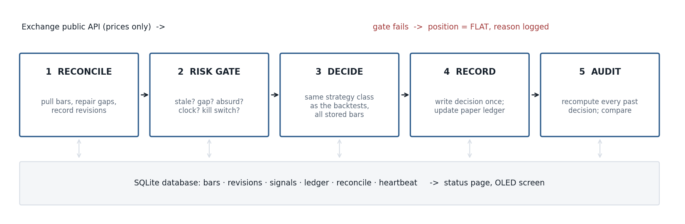
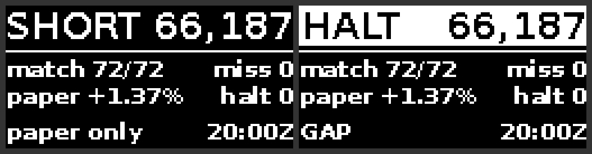

Paper-trading appliance
A Raspberry Pi 5 that runs the one strategy that survived my testing on live hourly Bitcoin prices, with no real money. Its job is to answer an engineering question: does a live system make exactly the decisions the backtest says it should?
It went live on 3 October 2026. It reads public prices and writes decisions to a database. There is no order-placing code in it, and it needs no account or API key.
Why build it?
A backtest assumes perfect data arriving on time. A live system gets late bars, missing bars, revised bars, power cuts and a clock that drifts. If the live decisions differ from the backtest, the backtest was describing a system that cannot exist.
The strategy is Volatility Hawkes, with parameters frozen from 2018–2022 data. Its edge is small and fading, which is why it runs on paper. Every hour it runs also extends the strategy's after-publication record.
The same five steps, every hour

- Reconcile first. Pull the latest bars, repair gaps, and record any bar the exchange has changed.
- Risk gate. Stand aside if the data is stale, incomplete or absurd, if the clock is more than 30 seconds off, or if the kill switch is on.
- Decide. Run the same strategy class the backtests use, on all bars since a fixed start date, so every run is a pure function of stored data.
- Record. Write the decision once. It is never rewritten. Hours when the Pi was off are marked as missed, not filled in afterwards.
- Audit. Recompute every past decision from stored data and compare it with what was logged.
Proved by replay before it ran live
Thirty days of real hourly history were fed through the exact code the Pi runs, one hour at a time, with faults injected.
| Test | Result |
|---|---|
| Clean replay | 720 of 720 decisions equal the backtest; paper and backtest returns agree to six decimal places |
| Power cut for 30 hours, database closed and reopened | 30 hours labelled missed; all 690 decisions made while running match |
| Missing bar, late bar, absurd price, clock two minutes off, kill switch | Flat or no decision each time; recovers without help |
| Exchange revises a bar after the decision | Revision recorded; every decision re-checked against the corrected data |
The build
- Raspberry Pi 5, 8 GB, running Raspberry Pi OS Lite and managed over SSH.
- 512 GB NVMe SSD as the boot drive. A database written every hour wears out SD cards.
- 128 × 64 OLED on the I2C pins, showing position, price, how many decisions match the backtest, and the paper return. The image below is drawn by the same code that drives the screen.
- systemd service that starts at boot, waits for the network and a correct clock, and restarts after a crash.

Normal operation (left) and standing aside (right), from a replay.
Limits
- Paper fills happen at the bar's closing price. A real fill would come seconds later at a slightly different price; that gap is not measured yet.
- One exchange (Binance.US), which is a small venue.
- The live record is new. It will take months before it says anything about the strategy itself.
Code · The strategy is by neurotrader888 (MIT licence); see mcpt-lab for credits.